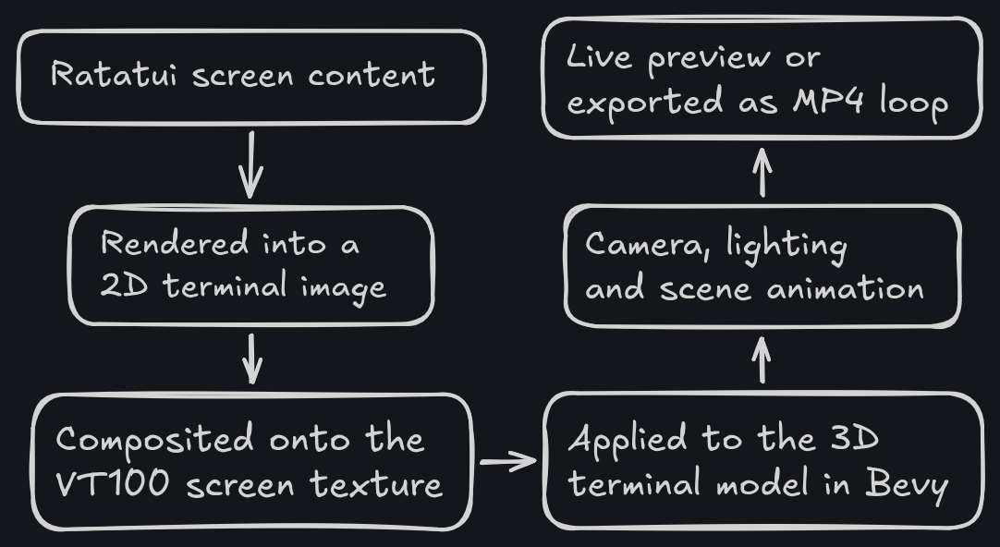
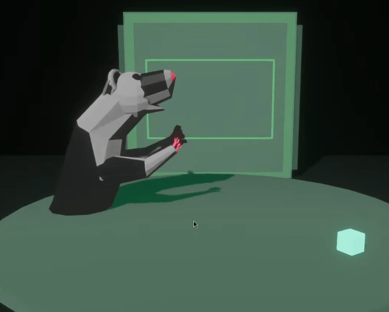
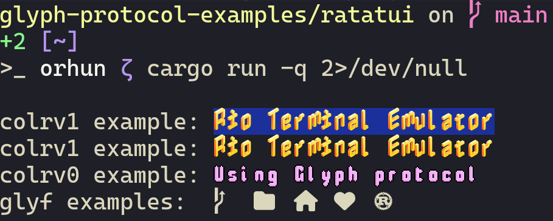
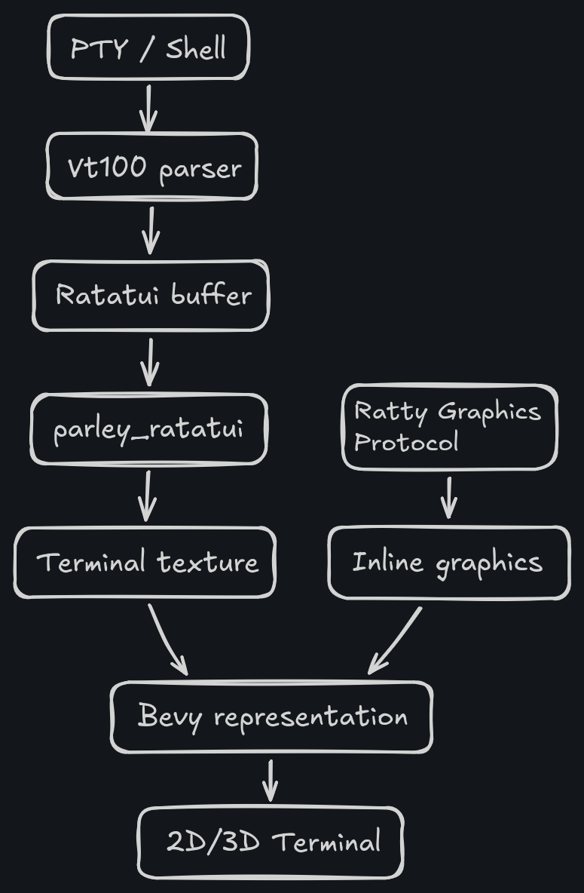
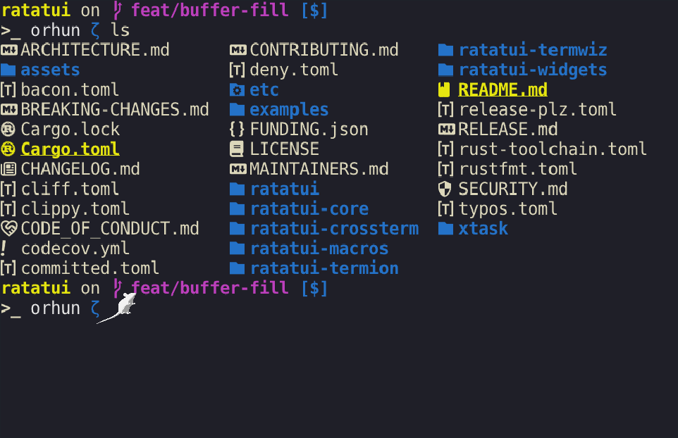
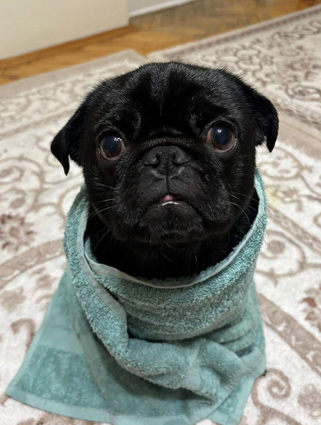
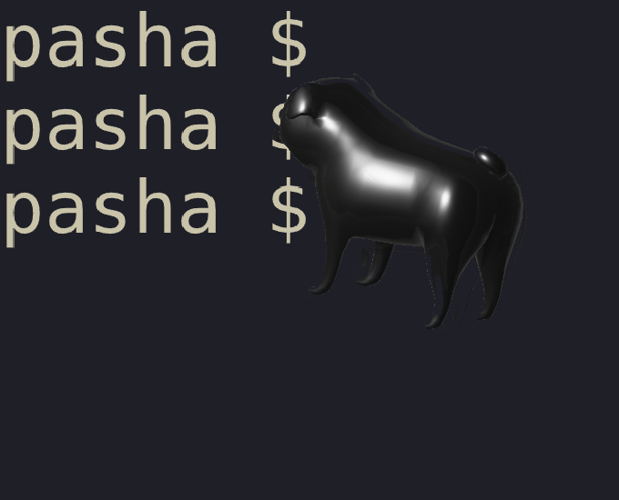
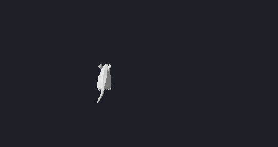

Just trying to answer one simple question: What if the terminal was 3D?
TL;DR: Ratty is a GPU-rendered terminal emulator that supports inline 3D graphics.
It is inspired by TempleOS and built with Rust and Ratatui.
Origins
If you have ever tried out TempleOS or seen videos of it, you probably know that the whole operating system feels like a fever dream or a psychedelic trip.
When I first got introduced to it by this documentary, I was shocked and impressed by the flashy colors, graphical sprites and uncomprehensible UI. There are so many things that makes it so unique, weird and fascinating at the same time, somehow.
(See a A Constructive Look At TempleOS if you want to read more about it.)
But most importantly, I was really impressed by the fact that Terry Davis (RIP) designed the command line to handle sprites (graphical images) as first-class, insertable document entries (powered by custom DolDoc format), rather than just text. So you can put images, 3D meshes and even macros (clickable links) directly into the command line. This was intriguing!
Well, what's the upside of that?
Basically, the command line becomes the direct interface for everything. You can write code, interact with the system and render graphics all in the same place, which is why TempleOS feels so unusual compared to conventional operating systems.
In one of the livestreams where Terry was demonstrating the features of TempleOS, he first draws a 3D mesh and then directly previews it in the command line:
Then he proceeds to import the sprite next to the code and uses it there:
So wait, in TempleOS a program can contain sprite data inline, so art assets for a game or demo can live in the same source file? Damn, Terry was really a genius.
Yes, you can literally have a spinning 3D model of a rat as a comment in a source file. (Foreshadowing?)
In Terry's own words: "f*cking sprites, command-line... f*cking... f*ck yeah".
So, this whole "sprites on the command-line" idea was in the back of my mind for a while. I even reported to a modern terminal project, hoping that my good friend Raphael Amorim would be interested. But so far, a terminal emulator like that didn't exist.
Until today.
Motivation
When we launched Terminal Tuesdays podcast, we needed looping footage to play during the show. I wanted something visually pleasing to watch and something that fits our VT100 theme. We already had the rights to use this 3D model, but I had no idea how to animate it. So I asked on our Grindhouse server whether anyone would have experience animating something like that. The next day, one of our talented members gold-silver-copper came up with this amazing rotating terminal animation:
What really blew my mind was that the VT100's screen isn't a baked animation at all, it's a live terminal UI rendered by Ratatui. Rust code renders the 2D terminal output with soft_ratatui, composites it into the model's screen texture and Bevy displays that texture on the 3D terminal as the camera animates around it. In other words, it's a 2D terminal renderer feeding a 3D animation pipeline in real time.

The possibility of rendering TUIs in 3D space got me really excited. Then for the next two consecutive weekends, I hacked on Bevy and Ratatui integrations at the Mercimek hackerspace.
At first I really didn't know what I was building, so I just threw the rotating_terminal repository to Codex and asked it to make things for me. At some point I even vibe coded a really broken game on a livestream, which was fun:

That rectangle in the background was rendered with Ratatui, which made one thing apparent to me: the idea had potential and I could build on it to make something proper.
Coincidentally while these events were unfolding, Raphael Amorim came up with a new terminal protocol called Glyph Protocol which allows terminals to own font data and render glyphs as first-class objects. It also had an example with Ratatui which showed how to render a TUI with custom fonts and glyphs. This was inspiring:

And that's when it clicked. What I really wanted was not rendering 2D graphics in a 3D space, but the opposite. Basically I wanted to render 3D graphics in a 2D terminal and just follow what Terry Davis did with TempleOS. Reading the glyph protocol also gave me confidence that I could also design my own terminal protocol similar to it.
And so,
Ratty, a new 3D terminal! 🧀
In Ratty,
- your terminal cursor is a spinning rat,
- your whole terminal is a 3D canvas,
- you can insert 3D models and sprites into the terminal.
Man, that's crazy, the fact you can pull the terminal like that!
Makes sense since it's all in 3D but still...
Yes! Also check out the 3D drawing demo:
That's not it. Remember the documents in TempleOS with inline sprites?
Here it is, but in Ratty:
Click here for a fun fact!
The inserted 3D objects in the demo above are actually from the TempleOS codebase itself.
I extracted them and converted them to OBJ format to use it in the demo specifically.
"Extracted them?" What?
Yes, these objects were not stored as "normal" 3D model files, but they live inside "DolDoc documents" or HolyC (.HC) source files as embedded sprite bins. This is because the TempleOS shell is just a document as explained before, so when a game or a menu needs to use a sprite, it just embeds the sprite data into the same file and references it from there.
More technically speaking: at the file-format level, a DolDoc document is stored as plain document text, then a terminating NUL, and then a tail section of appended CDocBin records with raw sprite payloads after each record. The BI= field in an inline $$SP...$$ or $$IB...$$ entry is effectively an index into that appended binary section.
A simplified layout looks like this:
[$$SP,"<1>",BI=1$$ ... document text ... \0]
[CDocBin header: num=1, size=246, use_cnt=3]
[raw CSprite bytes...]
[CDocBin header: num=2, size=282, use_cnt=3]
[raw CSprite bytes...]
...So the visible DolDoc source contains the inline BI=1 reference, while the actual sprite data lives later in the same file, after the text section has already ended.
CDocBin stores metadata such as num, size, and use_cnt, and the payload is usually a packed CSprite stream. Those sprite streams are not always raster images. They can be vector-ish drawing commands, bitmap blocks, or mesh-like records such as SPT_MESH.
That is why extracting .obj files was annoying as hell.
- Find the NUL that terminates the document text.
- Walk the appended bin headers.
- Dump the raw bin payloads.
- Decode the sprite bytes into OBJ geometry.
Here is a minimal script that extracts the sprite data:
fn u32le(buf: &[u8], off: usize) -> u32 {
u32::from_le_bytes(buf[off..off + 4].try_into().unwrap())
}
fn main() {
let blob = std::fs::read("Demo/Games/CastleFrankenstein.HC").unwrap();
let text_end = blob.iter().position(|&b| b == 0).unwrap();
let mut off = text_end + 1;
while off + 16 <= blob.len() {
let num = u32le(&blob, off);
let flags = u32le(&blob, off + 4);
let size = u32le(&blob, off + 8) as usize;
let use_cnt = u32le(&blob, off + 12);
off += 16;
let data = &blob[off..off + size];
off += size;
if !data.is_empty() {
println!(
"BI={} flags={} size={} use_cnt={} first_type={}",
num,
flags,
size,
use_cnt,
data[0] & 0x7f
);
}
}
}Ratty also supports the Kitty Image Protocol (how ironic!) so you can render images (like the TempleOS logo on top right in the demo above).
How the heck does all of this work under the hood?
Implementation ⚙️
Let's break down how the terminal output gets rendered on the screen in three stages:
-
The terminal application or shell runs inside a PTY (via portable-pty crate) and terminal escape sequences are parsed (via vt100 crate) to keep track of the terminal screen state.
-
Ratatui creates a terminal buffer from that screen state and renders it into a texture on the GPU (via parley_ratatui crate). Under the hood, parley is used for text shaping such as font management and Vello is used for GPU rendering.
-
Bevy takes that texture and renders it in a 3D scene, where you can have cameras, lighting, 3D models and animations.
Ratty separates terminal emulation from presentation: one side handles PTY I/O and terminal parsing, while the other turns the result into a GPU-rendered 2D or 3D scene.
This allows for a lot of flexibility in how the terminal output is displayed (e.g. you can warp the whole damn thing).

As a concrete example of this rendering pipeline, let's talk about how the "spinning rat cursor" works.

On the terminal side managed by Ratatui, the cursor is just another cell location.
It is first queried and then rendered as a blank character:
use ratatui::buffer::Buffer;
use ratatui::layout::Rect;
let area = Rect::new(0, 0, cols, rows);
let mut buffer = Buffer::empty(area);
let cursor_row: u16 = 42;
let cursor_col: u16 = 69;
buffer[(cursor_col, cursor_row)].set_char(' ');Separately, Bevy owns a cursor entity (e.g. 3D model of a rat):
commands.spawn((
CursorModel,
Mesh3d(mesh_handle),
MeshMaterial3d(material_handle),
Transform::from_xyz(0.0, 0.0, 10.0),
));Once you know the terminal size and the viewport size, you can map a cell into scene space:
let cell_width = viewport_size.x / cols as f32;
let cell_height = viewport_size.y / rows as f32;
let x = -viewport_size.x * 0.5 + (cursor_col as f32 + 0.5) * cell_width;
let y = viewport_size.y * 0.5 - (cursor_row as f32 + 0.5) * cell_height;And then it is a matter of animating it like any other Bevy object:
let spin = elapsed_secs * 3.0;
let bob = (elapsed_secs * 5.0).sin() * cell_height * 0.15;
transform.translation = Vec3::new(x, y + bob, 10.0);
transform.rotation =
Quat::from_rotation_y(spin) * Quat::from_rotation_x(-0.25);
transform.scale = Vec3::splat(cell_width.min(cell_height));That is the whole trick: the cursor is just a normal scene object that gets its position from the terminal state and then it can do whatever it wants in the 3D world.
For example, you can configure the cursor to be your dog:


And it's just a matter of tweaking some parameters in the config file:
[cursor.model]
path = "pug.obj"
color = "#000000"
scale_factor = 6.0
brightness = 0.0
x_offset = 0.5
plane_offset = 18.0
visible = true
[cursor.animation]
spin_speed = 2
bob_speed = 40
bob_amplitude = 0.1That is so cute! But how about rendering arbitrary 3D objects?
Glad you asked!
Ratty Graphics Protocol 🐁
The underlying idea behind Ratty is that the terminal can be a richer graphical interface rather than a text-only environment. But unlike TempleOS, the terminal should still be usable in today's world and should support the tools that we already use. In other words, Ratty is trying to coexist with the modern terminal ecosystem rather than replacing it.
This means that we're still dependent on the legacy terminal stack (ANSI escape codes, VT100 control sequences, etc.), but we can design a new terminal protocol on top of it to extend the terminal's capabilities. That's where the Ratty Graphics Protocol (RGP) comes in.
The core idea is simple:
- register a 3D asset,
- place it in terminal cell space (anchored to a row and column),
- let Ratty render it as part of the scene.
Below you can see the anchoring of a 3D model to a terminal cell in action:

The @ cell above indicates the anchor point of the 3D model inserted in the terminal. When the anchor cell moves, the 3D model moves with it.
How do you communicate that to the terminal?
RGP messages are carried over APC, the Application Program Command control sequence:
ESC _ ratty ; g ; <verb> [ ; <key=value> ... ] ESC \
│ │ │ └── optional semicolon-separated fields
│ │ └──────────────── verb / operation
│ └───────────────────── graphics namespace
└───────────────────────────── protocol namespaceRGP currently has four operations:
sfor support queryrfor registering an object assetpfor placing an object into terminal cell spacedfor deleting an object
For example, to check whether the terminal supports RGP, an application can send:
ESC _ ratty;g;s ESC \And if the terminal supports it, it can respond with:
ESC _ ratty;g;s;v=1;fmt=obj|glb;path=1;anim=1;depth=1;color=1;brightness=1 ESC \To register a 3D model and animate it (with certain color and attributes):
ESC _ ratty;g;r;id=7;fmt=obj;path=CairoSpinyMouse.obj ESC \ESC _ ratty;g;p;id=7;row=5;col=10;w=3;h=2;animate=1;scale=1.0;depth=1.5;color=7fd0ff;brightness=1.0 ESC \Here is a demo that places a big rat in the terminal and tweaks some of its parameters:
How feasible do you think it will be for other terminals to implement RGP?
Honestly, not feasible at all. The whole graphics protocol is designed around Ratty's architecture and rendering pipeline, so supporting that in a traditional terminal emulator would be really hard. Some possibilities are 1) they can either halfway support the protocol where the graphics are rendered as ASCII-based 3D models or 2) this would be inspiring enough that we start re-thinking what a terminal might be and it paves the way for other protocols (which is a more realistic goal to have).
Of course, the protocol is still a work in progress (in this document) and there might be things that need to be changed. But the general idea is to have a simple and extensible protocol that applications can use to leverage Ratty's graphics capabilities without needing to know about the underlying rendering pipeline.
Speaking of...
Building applications 🦀
Today, a Ratatui widget called ratatui-ratty exists for building applications on top of RGP.
To use it, just add the dependency to your Cargo.toml:
cargo add ratatui-rattyAt the API level, a graphic is described by a small settings struct:
use ratatui_ratty::{RattyGraphic, RattyGraphicSettings};
let graphic = RattyGraphic::new(
RattyGraphicSettings::new("CairoSpinyMouse.obj")
.id(7)
.animate(true)
.scale(1.0)
.depth(1.5)
.color([0x7f, 0xd0, 0xff])
.brightness(1.0),
);Then all you need to do is register the asset with Ratty and place it into a Ratatui region:
use ratatui_core::{buffer::Buffer, layout::Rect, widgets::Widget};
graphic.register()?;
let mut buf = Buffer::empty(Rect::new(0, 0, 80, 24));
(&graphic).render(Rect::new(10, 5, 24, 10), &mut buf);To reiterate, the widget does not directly draw an object into the terminal buffer. Instead, it writes the appropriate RGP messages to stdout to register and place the object, and then Ratty takes care of rendering it in the scene.
So if you have an application that already uses Ratatui, you can just add ratatui-ratty as a dependency and start rendering spinning rats, octopuses or whatever you want!
See the widget examples here!
Frequently Asked Questions
How can I try out Ratty today?
Ratty is fully open source and available on GitHub: https://github.com/orhun/ratty
Follow the installation instructions or simply install it with cargo:
cargo install rattyThen you can configure it to your liking by tweaking ratty.toml.
I just installed Ratty and it compiled 600 Rust dependencies. My CPU caught on fire.
What the hell?
Sorry to hear that.
Ratty is literally running a game engine (Bevy) under the hood, so it is expected to have more dependencies than a traditional terminal emulator. Related to that, you might realize more resource usage while the terminal is running, which is also expected given the capabilities. It is definitely not the lightest terminal emulator out there and it's not trying to be.
I know, sacrificing 300MB of RAM just to run a terminal emulator is a lot. But everything comes with a cost, especially the spinning rat cursor...
Hopefully we can optimize that in the future!
So you're using Ratatui to render a terminal emulator? Isn't that a bit... backwards?
I thought it is a library to build applications inside the terminal.
A-ha! That's correct. And that's why Ratatui is more powerful than you think.
Ratty uses Ratatui as a terminal rendering layer. So instead of writing a TUI app that runs in a terminal, Ratty takes parsed terminal state and rebuilds it as a Ratatui-style buffer, then renders that buffer onto a texture.
That works well because Ratatui already has a solid model for terminal cells, styles and buffer-based rendering. See the terminal (docs) module for more details.
How much AI was involved in this work?
See my stance on AI-assisted programming in this blog post.
To put it briefly: it was involved, but definitely not in a way that I would consider "sloppy".
Wrapping up 🐀
All I wanted was to build a terminal emulator with a spinning rat as a cursor. Instead, I might have bitten off a bigger cheese. Funny thing is, it is not the first time that this is happening so I guess I never learn my lesson when it comes to my terminal obsession.
I must say, making a terminal emulator (and maintaining it as an open source project) is difficult. Ratty is just a fun experiment that I did to see if I could make the terminal more powerful and fun to use and not something that I expect people to daily-drive. But I guess I can't stop you if you want to do that and I will try my best to keep maintaining the project.
(hint: sponsorships help with motivation!)
My ultimate goal with Ratty is to explore the possibilities of what a terminal can be and inspire new ideas and projects in the terminal space. I believe these kinds of experiments are where creativity is born and I hope to spark some ideas for the future of terminals.
I also submitted a talk to EuroRust 2026 in Barcelona so hopefully I can share more about Ratty there!
What people are going to read is, "It's about a pathetic schizophrenic who made a crappy operating system."
My perspective is, "God said I made His temple."
— Terry A. Davis (RIP)